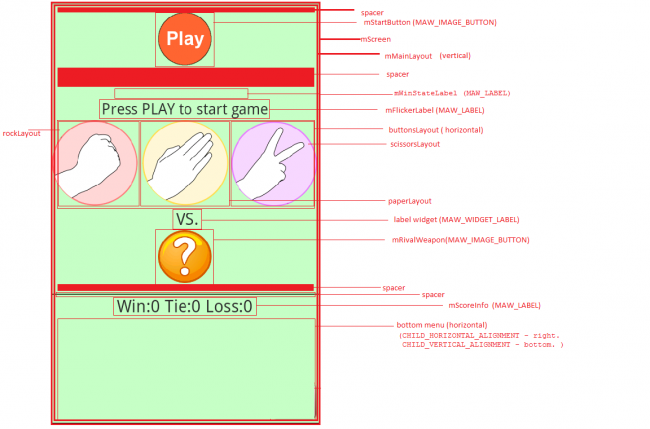

This application demonstrates the use of NativeUI screens and widgets to play the traditional game Rock-Paper-Scissors.
Note: These screens show the look of the application on Android. The application's appearance will of course be different on other platforms because it uses each platform's native GUI controls and settings. Note also that this example will not yet work on the MoSync emulator (MoRE) because it has no Native UI support. The platforms that support NativeUI are: Android, iOS and WP7.
This example is included in the MoSync SDK's /examples folder. For information on importing the examples into your workspace, see Importing the Examples.
When the application starts the user sees the main application screen with the message "Press PLAY to start game". On tapping "Play" the user is instructed to choose a weapon: rock, paper, or scissors. (The displayed weapons images can be found in the project's /Resources/Images folder.) Tapping a weapon plays the game against the computer opponent. The winner is computed by Game.cpp, and the result of the contest is shown to the user. The application keeps track of wins, ties, and losses, displaying these totals after each round.
The application's project is split into several code files, linked together through header files. In Moblet.cpp we manage the application. In PlayScreen.cpp we define the UI elements. And in Game.cpp we handle the game logic (scoring, etc.). The entry point for the entire application is in main.cpp.
There is one main application screen, Playscreen. All other displays are created from it (for example, by switching backgrounds and showing different sub-sets of widgets) according to the stage of the game that has been reached. PlayScreen.cpp handles the display of the screen, including its layout and the behaviour and positioning of the individual widgets:

To minimize the use of string conversions (using itoa functions) and code duplication, the method setWidgetProperty is used to set the value of an integer property for widgets (properties like MAW_WIDGET_BACKGROUND_COLOR).
A timer is used to switch the label for "Choose you weapon!" (mFlickrLabel) from visible to invisible and back to notify the user that input is required.